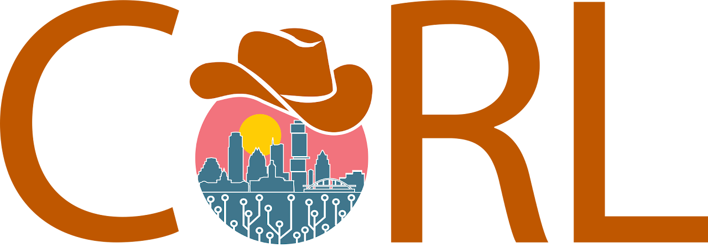
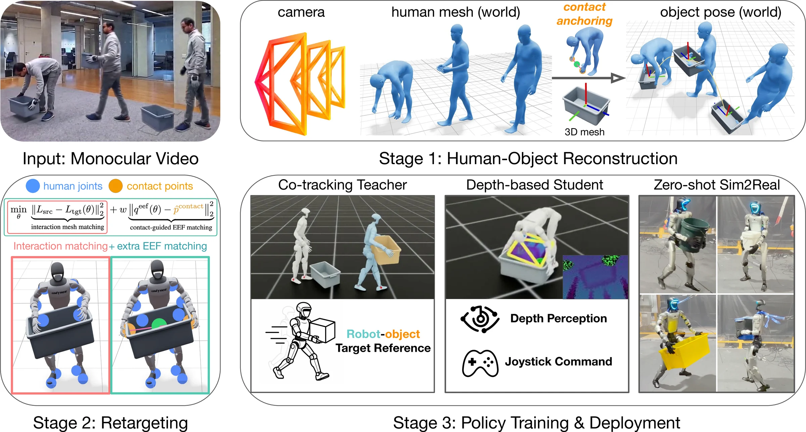

Real-to-Sim-to-Real
Counterfactual Video Generation for
Generalizable Humanoid Loco-Manipulation
Sample rich interactions. Learn one policy.
Generalize to unseen objects.

Conference on Robot Learning (CoRL 2026)1 Amazon FAR2 UC Berkeley3 Stanford University4 Carnegie Mellon University† Amazon FAR team co-leads.
Real-world generalization
Switch the test. Not the policy.
Different objects, scales, poses, and situations — one unified policy, deployed without real-world fine-tuning.
- Driven by onboard depthNo mocap, no reference.
- Autonomous policyJoystick steering only.
- Pure video dataZero-shot sim-to-real.
Video-to-video generation
Which video is real?
One was recorded; three were generated. Click the one you think is real.
What does a sample change?
Look beyond the texture. Compare the paired object and human motion.
The idea
Sample new objects,
with new ways to interact.
Starting from a few real videos, PRISM generates new objects together with the human motions to match.
Reconstruct in 3D. Train in simulation. Deploy for real.
Start from one real recording of a person carrying a box.
Method

BibTeX
@inproceedings{wang2026counterfactual,
title = {Counterfactual Video Generation for Humanoid Loco-Manipulation},
author = {Wang, Zihan and Wu, Zhen and Abbeel, Pieter and Duan, Rocky and Malik, Jitendra and Sferrazza, Carmelo and Liu, Karen and Shi, Guanya and Kanazawa, Angjoo},
booktitle = {RSS 2026 Workshop Whole-body Control and Bimanual Manipulation: Applications in Humanoids and Beyond}
}
Acknowledgements
We thank Qitao Zhao, Yen-Jen Wang, Sirui Chen, Chaile Cheng, Jiashun Wang, and Jacob Berg, and our colleagues at Amazon FAR, for their support and feedback. Video-to-video generation builds on Seedance 2.0, and human–object reconstruction builds on CRISP.